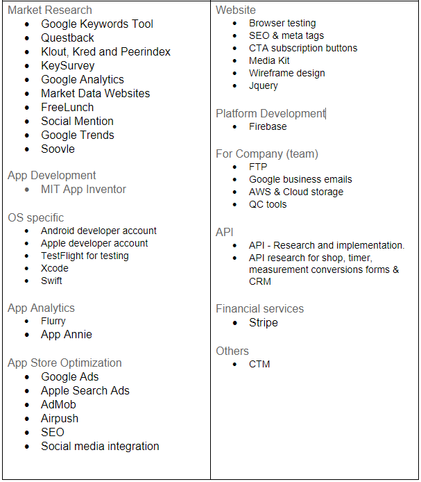

Tools and Technology
Currently Used Programs

Software Licenses
In terms of software licensing Microsoft Office 365 and any Adobe programs listed does require payment of sort to use/acquire. Microsoft Office 365 does require you to buy it to use but, RMIT does allow us, students, to use the student version free of charge. GitHub and Proto.io also do have a paid variant to use. But they also have a free version with limited features. But for GitHub RMIT, has supplied us with a student version also free of charge. The rest of the programs that were used for this project are either free to use online or free to download online to use.
Future Programs
Prior Experience
William Truong
William has some Photoshop and LucidChart experience as he used it before back in high school for class, but it's been a while so, it may take a while to relearn/remember on using the program/website. He has used MS paint often. As for Figma and MIT App Inventor, he has no experience in it. As most people do, he has many experiences using Microsoft programs (word, excel etc.).
Blade Sabre
Blade has been using MS paint for a long time. Ever since he has started using computers: Extensive experience. He has just started using Proto.io, only having limited experience. For MIT App Inventor Blade has only read up on some information and done some tutorials on it, never used it to make an app before having very limited experience. He used MS word extensively in high school and have started using GitHub for the first time for this online course, and he has found that he the getting the hang of it.
Peter Kassis
Peter’s experience has Photoshop & Premiere. He has used these professionally for 10 years within his business, For photography and videography.
He has used Google Analytics for about 7 years, along with adding words for one of his businesses. Peter has paid people previously to run SEO campaigns and google ads. He has used Google business emails for 10 years for my team of 6. He has used website keyword performance tools to enhance his website through wix.com. Although one of his companies uses AWS to run websites and mobile apps, he has no experience in it. He has used CRM forms such as contact us and subscribe forms through Wix.com for about 7 years, along with MailChimp and google docs spreadsheet for email and client management.
Martina Huynh
Martina’s experience with Adobe Suite (Photoshop, Indesign, Illustrator and Premiere Pro) is at a hobbyist level. Her main use for the Adobe suite is for marketing/promotional materials and design user guides.
She has no experience with Proto.io, MIT App Inventor or Figma. These programs are very similar to Angular, which she has beginner-level experience in.
Joshua Crilley
Josh is well versed in using MS words as he has used it constantly throughout his earlier years in school. He also has experience with MS Excel continuing to become more adept with its functions and features. He has started to use GitHub and have already begun learning the basics. Although he has visited the MIT App Inventor application on a few previous occasions, he still hasn’t had any experience in developing an App yet.